Release · October 2026
Connected Environment
1.0
The home for everything environmental on site.
WakeCap · Internal presentation
Danger
Weather Station
All Clear
Lightning
Check
Gas
Why one place
Is it safe to work right now?
Heat says one thing. Lightning says another. Gas says a third.
Danger
Weather Station

Danger, in words, with the steps to take.
All Clear
Lightning

All Clear. Only green counts as safe to work.
Check
Gas

Check. Not confirmed safe: one detector is not reporting.
Connected Environment puts them under one roof: one place to look.
Three projects, three screens, one portal. Live production screens, 4 October 2026. Names blurred.
Connected Environment 1.0 · Internal
2
What shipped
One product. Three environment products inside.
Connected Environment
One menu and header · one backend · each project switches on only what it uses
1.0
Weather Station
A verdict and the steps to take, not just a heat number.
Reports, and a Site Safety Policy with a 30 day preview.
Lightning
Alert state and alert distances, on a map.
Alarm history. A backup to the site's own cabinet lights and sounder.
Gas
Alerts you can acknowledge and close, and compliance limits.
One platform behind them. Readings and status from all three sit in one place.
DIRECTION
Going forward, new environment products go under Connected Environment.
Connected Environment 1.0 · Internal
3
Weather Station
A heat number is not an answer
1
A verdict, in words. The strip says Danger and the steps to take, in priority order.
2
The cycle in force. The heat card shows work, rest and water for the crew.
3
Station health. An offline station is named, and readiness reads Not ready.
4
Your readings. The gear, Select parameters, chooses which readings are featured.
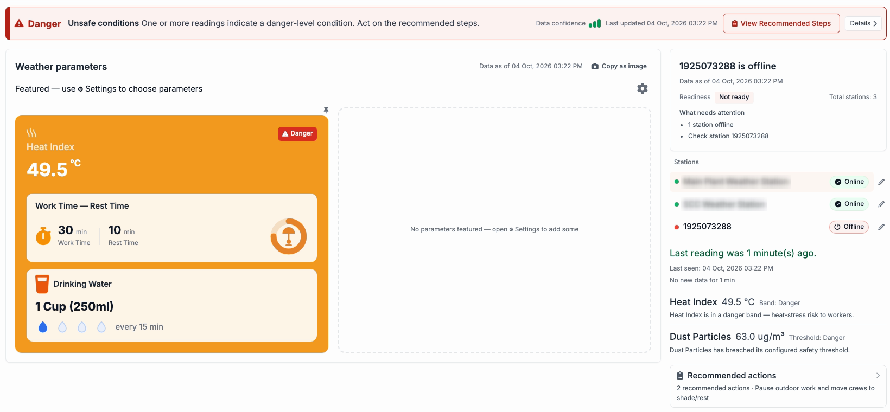
1
2
3
4
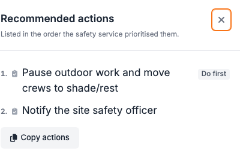
Live production screens, 4 October 2026. Station names blurred.
Inset: View Recommended Steps. The first action is marked Do first.
Connected Environment 1.0 · Internal
4
Weather Station · Reports and Safety Policy
Look back at the heat. Check what stops work.
Reports
Maximum Values Report
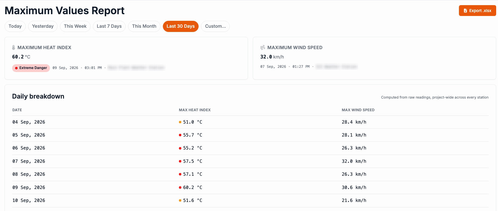
Settings, Weather Station
Site Safety Policy
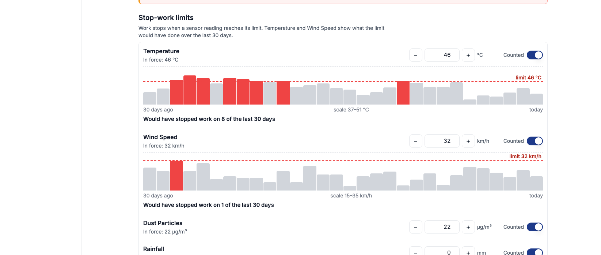
Pick a period, today to the last 30 days, or a custom range.
Peak heat index and peak wind speed, a daily breakdown, and an Excel export.
Temperature and wind limits show what they would have done in the last 30 days.
Heat index bands, each with its own work, rest and water settings. A Change history tab lists changes.
CAREFUL
The page warns: changing anything here changes when work stops, for everyone on the project.
Connected Environment 1.0 · Internal
5
Lightning
A backup, not the alarm
1
Cabinet lights and sounder first. The page's top line says so.
2
Only green is safe to work. The tile reads All Clear, with a held-for timer.
3
Alert distances, on a map. Red and yellow rings and a dot for the sensor. A zone reference, not a live strike position.
4
History you can export. An alarm activity chart, and an alarm history with CSV export.
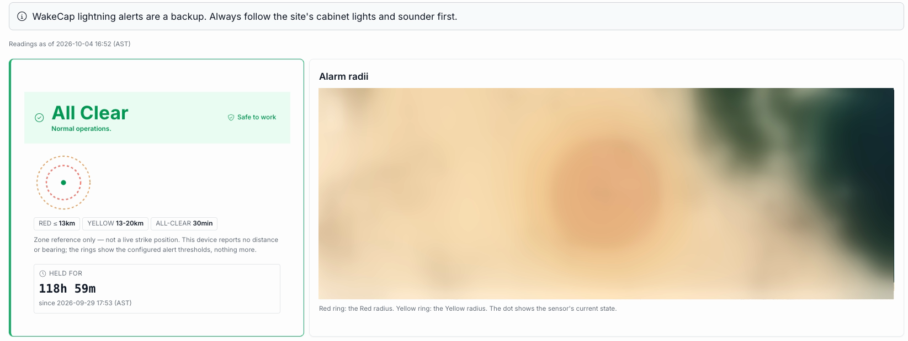
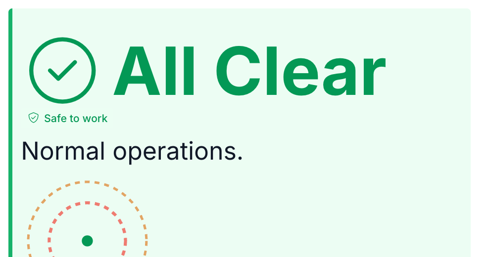
Live production screens, 4 October 2026. Map blurred.
Inset: the wallboard view. Wallboard and phone views open by web address, not from the menu.
ON THE PAGE
WakeCap lightning alerts are a backup. Always follow the site's cabinet lights and sounder first.
Connected Environment 1.0 · Internal
6
Gas
A quiet screen is not a safe screen
1
Overview. Detectors, how many are online, live alarms, and the worst current reading per gas, each with its limits.
2
Gaps are named. A detector that stops reporting shows as offline. The status reads Check: not confirmed safe.
3
Alerts. Acknowledge and close, with edit access. Recorded in WakeCap only, not sent to the gas vendor.
4
Compliance. Limits in force. Exposure and exceedance figures say Not available yet.
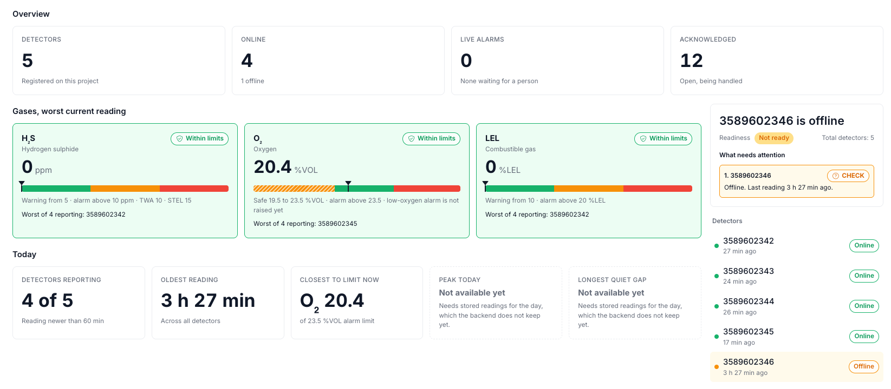
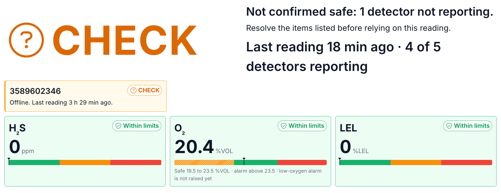
Live production screens, 4 October 2026.
Inset: the wallboard view, by web address.
NOTE
Acknowledge and close are recorded in WakeCap only. They are not sent to the gas vendor.
Connected Environment 1.0 · Internal
7
The platform
Each project switches on only what it uses
Project
Weather Station
Lightning
Gas
Weather alone
Lightning alone
Weather with Gas
Active or Inactive, one switch per product. Three real projects.
Settings, then Connected Products. One switch per product on a project.
The menu follows. A project's menu shows only what it has switched on.
One shell. One menu and header across all three products.
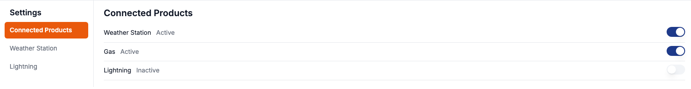
Live screen: Connected Products on a project with Weather Station and Gas on. Nothing was switched for this deck.
Connected Environment 1.0 · Internal
8
How readings arrive
Three roads in, one platform behind them
Weather
→
→
→
WakeCap cloud decodes and stores
Lightning
→
Modbus device on the mesh
→
→
WakeCap cloud, unreadable data set aside
Gas
→
Vendor's cloud, a black box to us
→
WakeCap asks on a regular timer
→
WakeCap stores readings and alerts
All three reach the same portal: Connected Environment.
Gas has no mesh and no Modbus. Each detector reports on its own schedule, so each reading shows its age. Modbus is an industrial wiring and data standard many sensors speak.
Connected Environment 1.0 · Internal
9
Honest edges
What it does not do yet, and where it is going
Good to know
Gas acknowledge and close are recorded in WakeCap only, not sent to the gas vendor.
Gas exposure and compliance figures say Not available yet. Some gas history is not stored yet.
Trends sits in the menu marked Planned.
The AI assistant is direction only. Building blocks exist for Weather Station only. No assistant runs on any site.
DIRECTION
Direction, not a commitment
New environment products go under Connected Environment.
A future assistant could read weather readings and propose changes. A person approves.
The weather safety answer comes from fixed rules. An assistant would only reword it.
Connected Environment 1.0 · Internal
10
Watch and try
Five short videos, and one place to start
1
Connected Environment overview
One umbrella over weather, lightning and gas.
3:21
2
Weather Station
The verdict, steps, Reports and Site Safety Policy.
2:18
3
Lightning
A backup alert view, alert distances and history.
2:08
4
Gas
Overview, Check, alerts and compliance limits.
2:32
5
Setup tour
Explore, feature, enable and configure, with voice-over.
4:33
Try it
1
Open your project in the portal.
2
In the left rail, click the sun-and-cloud icon: Connected Environment, if your project has it.
3
Read the top line first. Weather verdict, Lightning banner, Gas status.
4
Ask. Questions now, or after.
CAREFUL
Look, do not switch. Enabling a product or changing a policy changes a real project.
All five videos show live production screens, read only.
Connected Environment 1.0 · Internal
11
Appendix · Setup
How products are enabled and configured
1
Choose what to feature
Weather Station page, gear
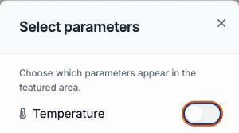
Select parameters: one switch per reading.
Each card can also move or leave the area.
2
Enable products
Settings, Connected Products
Weather Station
Gas
Lightning
One Active or Inactive switch per product.
3
Configure Weather Station
Settings, Weather Station
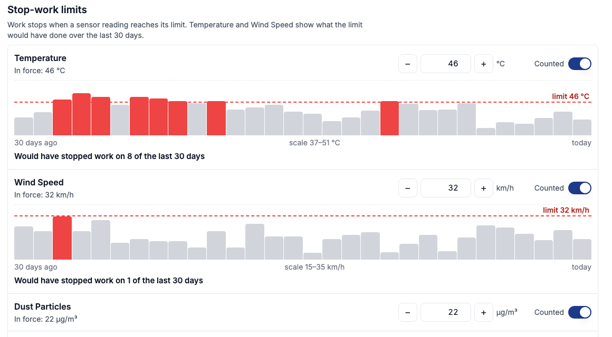
Site Safety Policy: limits, heat index bands, method, change history.
Changes when work stops, for the whole project.
4
Configure Lightning
Settings, Lightning
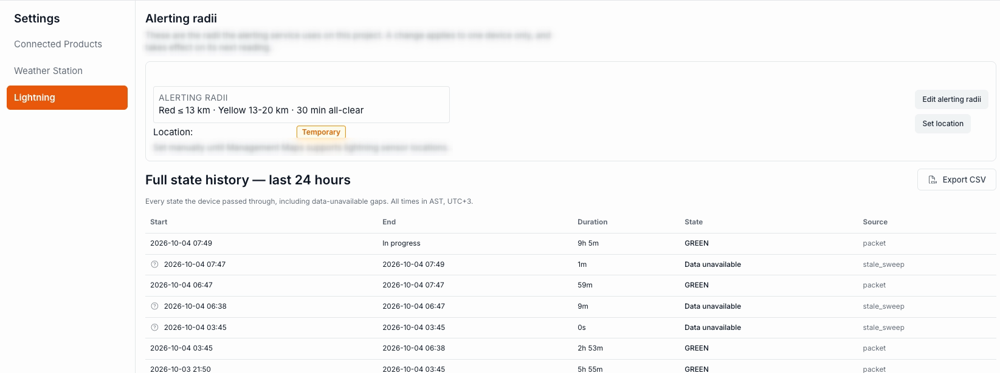
Edit alerting radii: red, yellow, all-clear delay.
Set location: click the map or type coordinates.
Gas has no settings page. Its limits are shown, read only, on the Compliance page. The setup tour video (4:33) walks through all of this.
Connected Environment 1.0 · Internal
12
Appendix · Careful wording
What we say, and what we do not say
Say
Connected Environment 1.0 is live. Weather Station, Lightning and Gas are in it today.
Lightning is a backup. The site's cabinet lights and sounder come first.
Gas acknowledge and close are recorded in WakeCap only.
The AI assistant is direction only.
New environment products go under it. (Direction, no dates.)
Do not say
One rule set, or one audit trail.
A go-live date, or any expansion plan.
That the assistant approves or runs anything.
That gas exposure or compliance figures exist today.
Connected Environment 1.0 · Internal
13
Appendix · Glossary
Terms used in the videos and on the screens
Verdict strip
The bar across the top of Weather Station: the state in words, and the steps to take.
Heat index
The heat number the policy uses, with a band such as Danger.
Readiness
Whether the stations or detectors can be relied on. Not ready lists what needs attention, such as an offline station.
Alert distances
Lightning reference rings, red and yellow. A zone, not a live strike position.
Held for
How long the current Lightning state has lasted.
Wallboard view
A large-type page for a site screen. Opens by web address.
Live alarms / Acknowledged
Gas: alerts nobody has acknowledged, and open alerts that are being handled.
Modbus
An industrial wiring and data standard many sensors speak.
Connected Environment 1.0 · Internal
14